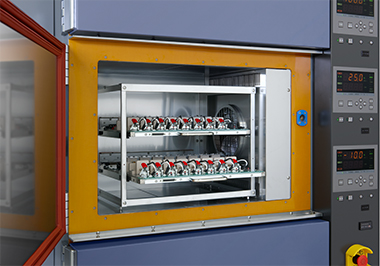
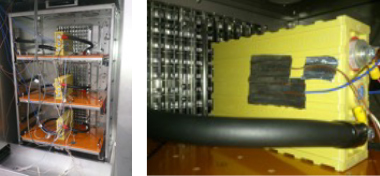
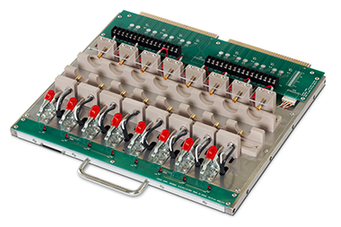
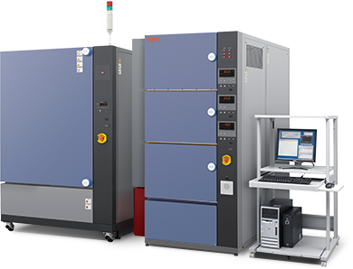
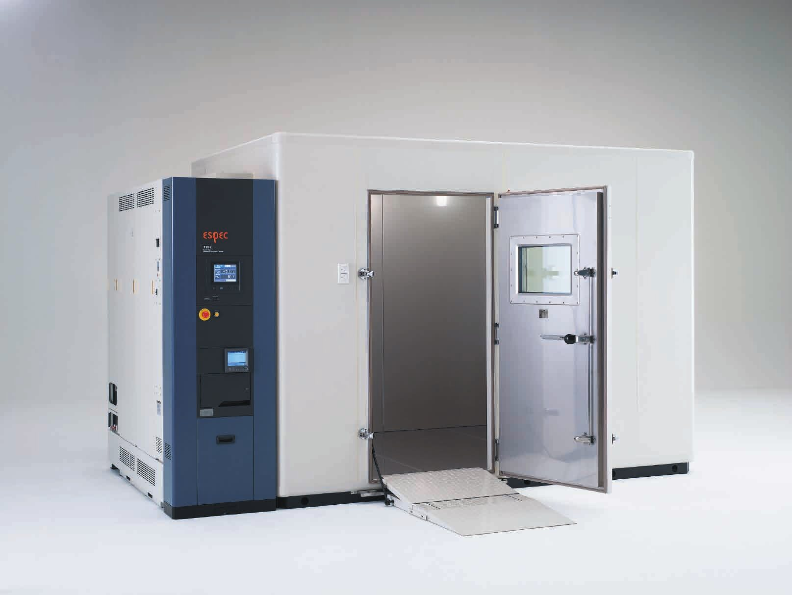

SOLUTION / 산업별 신뢰성 솔루션
Battery배터리
셀부터 팩까지, 충방전 성능과 안전성을 정밀한 온도 환경에서 시험합니다. 충방전 평가와 안전 시험 장비를 안내합니다.

배터리 셀 충방전 시험 장면, ESPEC 자료
Tests
배터리에서 하는 시험
- 충방전 성능·내구·온도 특성 시험충방전 장치와 챔버를 하나로 합친 시스템으로 성능 시험, 내구 시험, 온도 특성 시험, 임피던스 평가를 합니다.
배터리 시험 장비 보기 - 안전 시험정밀한 온도 환경에서 못 관통, 압괴, 외부 단락 시험을 합니다. 소용량 셀부터 노트북 배터리 팩까지 대상입니다.
배터리 시험 장비 보기 - 장시간 충방전용 항온항습Platinous J의 ECO형은 0°C 이하 운전에서 에너지를 크게 줄여 오래 돌리는 충방전 시험에 알맞습니다.
Platinous J 보기 - 배터리 팩 충방전 (워크인)큰 배터리 팩은 방 크기의 워크인 챔버에서 시험합니다. 배터리 팩용 모델의 사양은 문의해 주세요.
워크인 챔버 보기


Equipment
전체 제품 보기추천 장비

배터리 시험 장비
충방전·안전 시험
-40 ~ +100°C

Platinous J 시리즈 (ECO형)
항온항습기
-70 ~ +100°C

워크인 챔버
대형 항온항습 시험실 (배터리 팩용 모델은 문의)
-40 ~ +80°C (E 시리즈)
제품 사양은 ESPEC 공개 자료(수집일 2026-10-29) 기준입니다. 셀 크기, 충방전 전류, 안전 옵션은 시험 조건에 따라 달라지므로 문의해 주세요.
Standards
관련 규격
- EUCAR 위험 등급 (Hazard Level 0~7)충방전 시험용 항온기의 안전 옵션을 고객 사양에 맞춰 적용
그 밖의 적용 규격은 상담 시 함께 확인해 드립니다.
배터리 시험 장비, 시험 조건만 알려 주세요.
맞는 장비와 견적을 안내합니다. 전화 상담 [확인 필요: 번호]